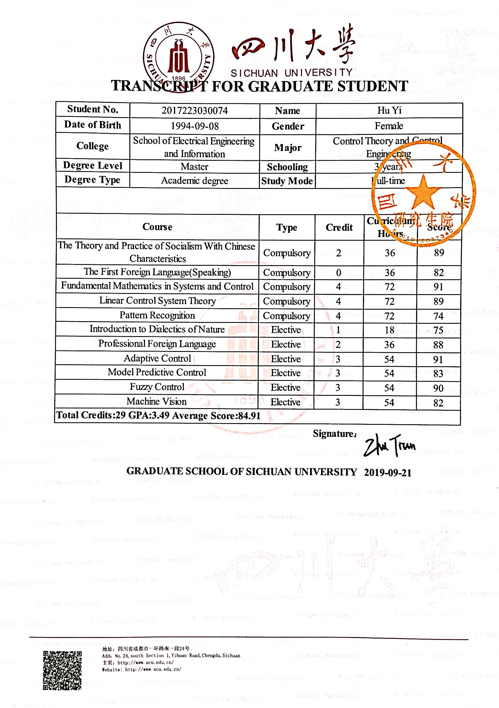
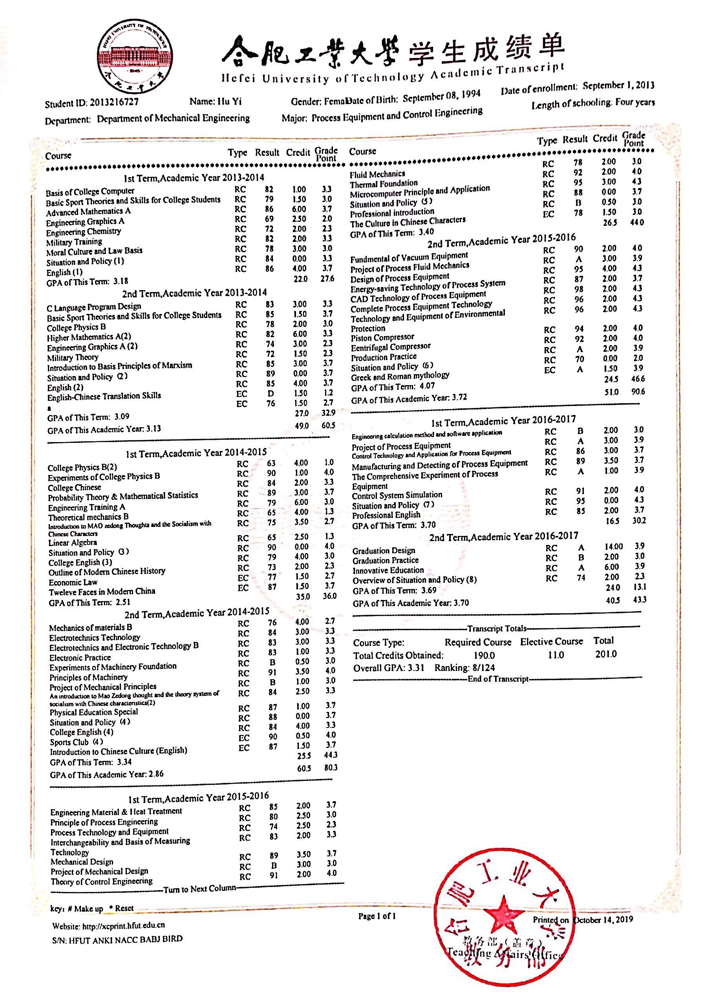

|
Yi Hu
Phone: +86-134-1848-8003
Email: yihu551@gmail.com
Address: Sichuan University, College of Electrical Engineering, Chengdu, Sichuan, China
Birthday: 1994/9 | Gender: Female
IELTS: 6.5 (L:6.5 R:6.5 W:7.0 S:5.5)
|
|
|
EDUCATION
Hefei University of Technology
2013.09 - 2017.07
B.S Process Equipment and Control Engineering
- GPA: 3.31 / 4.3; Integrated Ranking:8/124
- Awards: Graduate of Good Character and Scholarship in Anhui Province (2017); Outstanding Graduate in Hefei University of Technology (2017); Top Ten Outstanding Young Volunteer in Hefei University of Technology (2014);
Sichuan University
2017.09 - 2020.07
M.S Control theory and Control Engineering
- GPA: 3.49 / 4.0; Integrated Ranking: 4/8
- Awards: National Scholarship (2019); Outstanding Graduate in Sichuan University (2019); The First Prize Scholarship (2019); The Second Prize Scholarship (2017,2018);
RESEARCH EXPERIENCE
Video Inspection Robot For Steam Generator
2018.02 - 2019.07
Project Description
-
In order to observe the blockage of plum blossom holes in the evaporator, the video inspection robot is designed
to move automatically on the steam generator. The robot consists of three major components: continuum manipulator, magnetic wheel mobile vehicle and RGB-D camera. The RGB-D camera, connected with continuum manipulator, can collect video information when magnetic wheel mobile vehicle shuttles between heat transfer tubes.
Main Responsibility
- Finished modeling the kinematic equation of continuum manipulator, and participated in the design of its hardware control system
-
Finished modeling the mathematic model and designing the improved duai-heuristic dynamic programming control scheme
for magnetic wheel mobile vehicle
Spraying Robot For Complex Artifacts
2018.09 - Present
Project Description
- The spraying process is completed by the associated action between flexible-joint manipulator and revolving table. For the artifacts are complex and the spraying materials are harmful, the revolving table is designed to place the artifacts, and rotates a certain angle according to the trajectory of manipulator.
Main Responsibility
- Finished designing the adaptive fuzzy neural network control method for flexible-joint manipulator system
- Participated in controlling two coupled motors and one motor of revolving table
RESEARCH PUBLICATION
- Dian, S., Hu, Y., Zhao, T., & Han, J. Adaptive backstepping control for flexible-joint manipulator using interval type-2 fuzzy neural network approximator. Nonlinear Dynamics, 2019, 97(2): 1567-1580. https://link_springer.gg363.site/article/10.1007/s11071-019-05073-8
- Dian, S., Han, J., Guo, R., Li, S., Zhao, T., Hu, Y., & Wu, Q. Double Closed-Loop General Type-2 Fuzzy Sliding Model Control for Trajectory Tracking of Wheeled Mobile Robots. International Journal of Fuzzy Systems, 2019, 1-11. https://link_springer.gg363.site/article/10.1007/s40815-019-00685-z
- Other papers are in reviewing
SUMMARY
- Research interest: fuzzy system, neural network, adaptive control, robot control
- Language: Cantonese (Native), English (Fluent)
- Software: Matlab, Latex, Visual C++
- Personality: positive and creative, previously worked as the president in Youth Volunteers Association
- Hobbies: running, video editing
ACADEMIC TRANSCRIPT
- Sichuan University

- Hefei University of Technology
